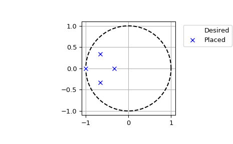

scipy.signal.place_poles¶
-
scipy.signal.place_poles(A, B, poles, method='YT', rtol=0.001, maxiter=30)[source]¶ Compute K such that eigenvalues (A - dot(B, K))=poles.
K is the gain matrix such as the plant described by the linear system
AX+BUwill have its closed-loop poles, i.e the eigenvaluesA - B*K, as close as possible to those asked for in poles.SISO, MISO and MIMO systems are supported.
- Parameters
- A, Bndarray
State-space representation of linear system
AX + BU.- polesarray_like
Desired real poles and/or complex conjugates poles. Complex poles are only supported with
method="YT"(default).- method: {‘YT’, ‘KNV0’}, optional
Which method to choose to find the gain matrix K. One of:
‘YT’: Yang Tits
‘KNV0’: Kautsky, Nichols, Van Dooren update method 0
See References and Notes for details on the algorithms.
- rtol: float, optional
After each iteration the determinant of the eigenvectors of
A - B*Kis compared to its previous value, when the relative error between these two values becomes lower than rtol the algorithm stops. Default is 1e-3.- maxiter: int, optional
Maximum number of iterations to compute the gain matrix. Default is 30.
- Returns
- full_state_feedbackBunch object
- full_state_feedback is composed of:
- gain_matrix1-D ndarray
The closed loop matrix K such as the eigenvalues of
A-BKare as close as possible to the requested poles.- computed_poles1-D ndarray
The poles corresponding to
A-BKsorted as first the real poles in increasing order, then the complex congugates in lexicographic order.- requested_poles1-D ndarray
The poles the algorithm was asked to place sorted as above, they may differ from what was achieved.
- X2-D ndarray
The transfer matrix such as
X * diag(poles) = (A - B*K)*X(see Notes)- rtolfloat
The relative tolerance achieved on
det(X)(see Notes). rtol will be NaN if it is possible to solve the systemdiag(poles) = (A - B*K), or 0 when the optimization algorithms can’t do anything i.e whenB.shape[1] == 1.- nb_iterint
The number of iterations performed before converging. nb_iter will be NaN if it is possible to solve the system
diag(poles) = (A - B*K), or 0 when the optimization algorithms can’t do anything i.e whenB.shape[1] == 1.
Notes
The Tits and Yang (YT), [2] paper is an update of the original Kautsky et al. (KNV) paper [1]. KNV relies on rank-1 updates to find the transfer matrix X such that
X * diag(poles) = (A - B*K)*X, whereas YT uses rank-2 updates. This yields on average more robust solutions (see [2] pp 21-22), furthermore the YT algorithm supports complex poles whereas KNV does not in its original version. Only update method 0 proposed by KNV has been implemented here, hence the name'KNV0'.KNV extended to complex poles is used in Matlab’s
placefunction, YT is distributed under a non-free licence by Slicot under the namerobpole. It is unclear and undocumented how KNV0 has been extended to complex poles (Tits and Yang claim on page 14 of their paper that their method can not be used to extend KNV to complex poles), therefore only YT supports them in this implementation.As the solution to the problem of pole placement is not unique for MIMO systems, both methods start with a tentative transfer matrix which is altered in various way to increase its determinant. Both methods have been proven to converge to a stable solution, however depending on the way the initial transfer matrix is chosen they will converge to different solutions and therefore there is absolutely no guarantee that using
'KNV0'will yield results similar to Matlab’s or any other implementation of these algorithms.Using the default method
'YT'should be fine in most cases;'KNV0'is only provided because it is needed by'YT'in some specific cases. Furthermore'YT'gives on average more robust results than'KNV0'whenabs(det(X))is used as a robustness indicator.[2] is available as a technical report on the following URL: https://hdl.handle.net/1903/5598
References
- 1(1,2)
J. Kautsky, N.K. Nichols and P. van Dooren, “Robust pole assignment in linear state feedback”, International Journal of Control, Vol. 41 pp. 1129-1155, 1985.
- 2(1,2,3)
A.L. Tits and Y. Yang, “Globally convergent algorithms for robust pole assignment by state feedback”, IEEE Transactions on Automatic Control, Vol. 41, pp. 1432-1452, 1996.
Examples
A simple example demonstrating real pole placement using both KNV and YT algorithms. This is example number 1 from section 4 of the reference KNV publication ([1]):
>>> from scipy import signal >>> import matplotlib.pyplot as plt
>>> A = np.array([[ 1.380, -0.2077, 6.715, -5.676 ], ... [-0.5814, -4.290, 0, 0.6750 ], ... [ 1.067, 4.273, -6.654, 5.893 ], ... [ 0.0480, 4.273, 1.343, -2.104 ]]) >>> B = np.array([[ 0, 5.679 ], ... [ 1.136, 1.136 ], ... [ 0, 0, ], ... [-3.146, 0 ]]) >>> P = np.array([-0.2, -0.5, -5.0566, -8.6659])
Now compute K with KNV method 0, with the default YT method and with the YT method while forcing 100 iterations of the algorithm and print some results after each call.
>>> fsf1 = signal.place_poles(A, B, P, method='KNV0') >>> fsf1.gain_matrix array([[ 0.20071427, -0.96665799, 0.24066128, -0.10279785], [ 0.50587268, 0.57779091, 0.51795763, -0.41991442]])
>>> fsf2 = signal.place_poles(A, B, P) # uses YT method >>> fsf2.computed_poles array([-8.6659, -5.0566, -0.5 , -0.2 ])
>>> fsf3 = signal.place_poles(A, B, P, rtol=-1, maxiter=100) >>> fsf3.X array([[ 0.52072442+0.j, -0.08409372+0.j, -0.56847937+0.j, 0.74823657+0.j], [-0.04977751+0.j, -0.80872954+0.j, 0.13566234+0.j, -0.29322906+0.j], [-0.82266932+0.j, -0.19168026+0.j, -0.56348322+0.j, -0.43815060+0.j], [ 0.22267347+0.j, 0.54967577+0.j, -0.58387806+0.j, -0.40271926+0.j]])
The absolute value of the determinant of X is a good indicator to check the robustness of the results, both
'KNV0'and'YT'aim at maximizing it. Below a comparison of the robustness of the results above:>>> abs(np.linalg.det(fsf1.X)) < abs(np.linalg.det(fsf2.X)) True >>> abs(np.linalg.det(fsf2.X)) < abs(np.linalg.det(fsf3.X)) True
Now a simple example for complex poles:
>>> A = np.array([[ 0, 7/3., 0, 0 ], ... [ 0, 0, 0, 7/9. ], ... [ 0, 0, 0, 0 ], ... [ 0, 0, 0, 0 ]]) >>> B = np.array([[ 0, 0 ], ... [ 0, 0 ], ... [ 1, 0 ], ... [ 0, 1 ]]) >>> P = np.array([-3, -1, -2-1j, -2+1j]) / 3. >>> fsf = signal.place_poles(A, B, P, method='YT')
We can plot the desired and computed poles in the complex plane:
>>> t = np.linspace(0, 2*np.pi, 401) >>> plt.plot(np.cos(t), np.sin(t), 'k--') # unit circle >>> plt.plot(fsf.requested_poles.real, fsf.requested_poles.imag, ... 'wo', label='Desired') >>> plt.plot(fsf.computed_poles.real, fsf.computed_poles.imag, 'bx', ... label='Placed') >>> plt.grid() >>> plt.axis('image') >>> plt.axis([-1.1, 1.1, -1.1, 1.1]) >>> plt.legend(bbox_to_anchor=(1.05, 1), loc=2, numpoints=1)
